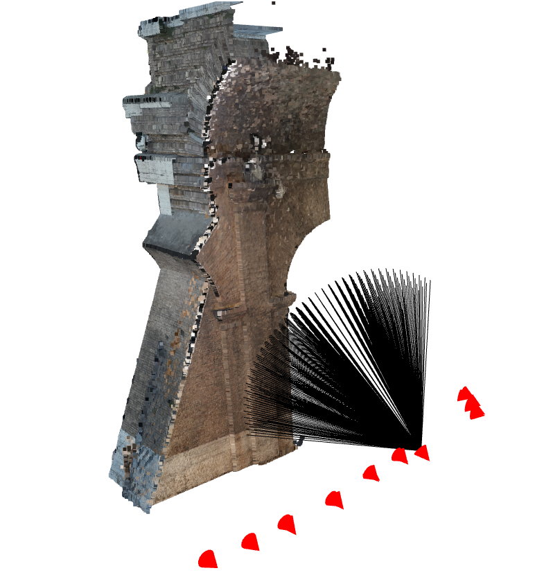

geomapi.nodes.orthonode
OrthoNode is a Python Class to govern the data and metadata of orthomosaic data.
This node builds upon the [OpenCV](https://opencv.org/), [Open3D](https://www.open3d.org/) and [PIL](https://pillow.readthedocs.io/en/stable/) API for the image definitions. Be sure to check the properties defined in those abstract classes to initialise the Node.

IMPORTANT: This Node class is designed to manage geolocated orthomosaics. It works best when the location parameters are known.
- class geomapi.nodes.orthonode.OrthoNode(subject: URIRef | None = None, graph: Graph | None = None, graphPath: Path | None = None, name: str | None = None, path: Path | None = None, timestamp: str | None = None, resource=None, cartesianTransform: ndarray | None = None, orientedBoundingBox: open3d.geometry.OrientedBoundingBox | None = None, convexHull: open3d.geometry.TriangleMesh | None = None, loadResource: bool = False, dxfPath: Path = None, tfwPath: Path = None, imageWidth: int = None, imageHeight: int = None, gsd: float = None, depth: float = 10, height: float = None, **kwargs)
Bases:
Node- __init__(subject: URIRef | None = None, graph: Graph | None = None, graphPath: Path | None = None, name: str | None = None, path: Path | None = None, timestamp: str | None = None, resource=None, cartesianTransform: ndarray | None = None, orientedBoundingBox: open3d.geometry.OrientedBoundingBox | None = None, convexHull: open3d.geometry.TriangleMesh | None = None, loadResource: bool = False, dxfPath: Path = None, tfwPath: Path = None, imageWidth: int = None, imageHeight: int = None, gsd: float = None, depth: float = 10, height: float = None, **kwargs)
Creates an OrthoNode. Overloaded function.
This Node can be initialised from one or more of the inputs below. By default, no data is imported in the Node to speed up processing. If you also want the data, call node.get_resource() or set getResource() to
- Args:
subject (RDFlib URIRef) : subject to be used as the main identifier in the RDF Graph
graph (RDFlib Graph) : Graph with a single subject (if multiple subjects are present, only the first will be used to initialise the Node)
graphPath (Path) : Graph file path with a single subject (if multiple subjects are present, only the first will be used to initialise the Node)
path (Path) : Path to an image .jpg, jpeg, .png file (data is not automatically loaded)
resource (ndarray, PIL, Open3D) : Image data from [Open3D](https://www.open3d.org/), [OpenCV](https://opencv.org/) or [PIL](https://pillow.readthedocs.io/en/stable/).
imageWidth (int, optional) : width of the image in pixels (u). Defaults to 2000pix
imageHeight (int, optional) : height of the image in pixels (v). Defaults to 1000pix
gsd (float, optional) : Ground Sampling Distance in meters. Defaults to 0.01m
depth (float, optional) : Average depth of the image in meters. Defaults to 10m
height (float, optional) : Average height of the cameras that generated the image in meters. Defaults to None
dxfPath (Path, optional) : Path to the dxf file with the orthometadata from MetaShape. Defaults to None.
tfwPath (Path, optional) : Path to the tfw file with the orthometadata from MetaShape. Defaults to None.
getResource (bool, optional) : If True, the resource is loaded from the path. Defaults to False.
**kwargs : Additional keyword arguments to be used in the Node class.
- Returns:
OrthoNode : A OrthoNode with metadata
- property dxfPath
The path (Path) of the dxf file with the orthometadata from MetaShape.
- property tfwPath
The path (Path) of the tfw file with the orthometadata from MetaShape. The tfw world file is a text file used to georeference the GeoTIFF raster images, like the orthomosaic and the DSM. The tfw file is a 6-line file:
Line 0: pixel size in the x-direction in map units (GSD). Line 1: rotation about y-axis. Line 2: rotation about x-axis. Line 3: pixel size in the y-direction in map in map units (GSD). Line 4: x-coordinate of the upper left corner of the image. Line 5: y-coordinate of the upper left corner of the image.
- property imageWidth
Get the imageWidth (int) or number of columns of the resource of the node.
- property imageHeight
Get the imageHeight (int) or number of rows of the resource of the node.
- property gsd
Get the Ground Sampling Distance (float) of the node.
- property depth
Get the maximum depth of the image, defaults to one
- property height
Get the average height (float) of cameras that generated the image. This is used for the convex hull and oriented bounding box.
- property resource
The resource (mesh, image, etc.) of the node. If no resource is present, you can use get_resource(), to load the resource from a path or search it through the name and graphpath.
- Inputs:
self.path
self.name
self.graphPath
- load_resource() ndarray
Loads the resource from the path
- Returns:
np.ndarray or None
- save_resource(directory: Path | str = None, extension: str = '.jpg') bool
Export the resource of the Node.
- Args:
directory (str, optional) : directory folder to store the data.
extension (str, optional) : file extension. Defaults to ‘.jpg’.
- Raises:
ValueError: Unsuitable extension. Please check permitted extension types in utils._init_.
- Returns:
bool: return True if export was succesfull
- get_metadata_from_tfw_path()
Get metadata from the tfw file. Uses the following information.
NOTE: Only Geographic projection information is currently supported.
The tfw world file is a text file used to georeference the GeoTIFF raster images, like the orthomosaic and the DSM. The tfw file is a 6-line file:
Line 0: pixel size in the x-direction in map units (GSD). Line 1: rotation about y-axis. Line 2: rotation about x-axis. Line 3: pixel size in the y-direction in map in map units (GSD). Line 4: x-coordinate of the upper left corner of the image. Line 5: y-coordinate of the upper left corner of the image.
- Args:
self._imageWidth
self._imageHeight
self._height
self._depth
- Returns:
self._gsd
self._cartesianTransform
- create_rays(imagePoints: array = None, depths: array = None) open3d.core.Tensor
Generate a grid a rays from the camera location to a given set of imagePoints.
NOTE: This function targets a subselection of imagePoints, use o3d.t.geometry.RaycastingScene.create_rays_pinhole if you want a dense raytracing for the full image.
- Args:
imagePoints (np.array[n,2]) : imagePoints are conform uv (column, row) image coordinates system. so top left is (0,0). The camera intrinsic matrix is used to map it to the proper image coordinates. Defaults to np.array([[0, 0],[0, self._imageWidth],[self._imageHeight, 0],[self._imageHeight, self._imageWidth]]).
depths (np.array[n,1], optional) : Depths of the rays. Defaults to 50m for each point.
- Returns:
o3d.core.Tensor (n,6) where [:,0:3] is the camera center and [:,3:6] are the directions of the rays towards the imagePoints.
- pixel_to_world_coordinates(pixels: array, depths: array = None) ndarray
Converts pixel coordinates in an image to 3D world coordinates.
This function takes pixel coordinates and optional depths and converts them to 3D world coordinates.
- Args:
pixels (np.array[n,2]) : Pixel coordinates in the image (row, column).
depths (np.array[n,1], optional) : Depths for the corresponding pixel coordinates. Defaults to 50m for each point.
- Returns:
A 2D array containing the 3D world coordinates.
- world_to_pixel_coordinates(worldCoordinates) ndarray
Converts 3D world coordinates to pixel coordinates in an image.
This function takes 3D world coordinates and converts them to pixel coordinates in an image. It uses camera parameters such as the transformation matrix, focal length, image width, and image height.
NOTE: the pixel coordinates have a (row, column) format. This fitts well with array indexing, but not with Matplotlib’s imshow function.
- Args:
worldCoordinates (np.ndarray (n,3 or n,4 )): A set of 3D (homogeneous) points in world coordinates to be converted.
- Returns:
A 2D array containing the pixel coordinates (row, column) in the image.
- Note:
The function performs a series of transformations, including world to camera, camera to image, and image centering.
It returns the imageCoordinates as a 2D array.
- project_lineset_on_image(linesets: List[open3d.geometry.LineSet], thickness: int = 2, overwrite=True) ndarray
Project Opend3D linesets onto the resource of the node.
NOTE: this affects the original image if overwrite is True.
- Args:
linesets (List[o3d.LineSet]) : List of linesets. Note that the color of the lines is stored in the lineset.
thickness (int) : Thickness of the projected lines
overwrite (bool) : If True, the original image is overwritten. If False, a new image is created.
- Returns:
The resource of the ImageNode with the projected lines.
- show(convertColorspace=False)
Creates a visualization of the resource (if loaded)